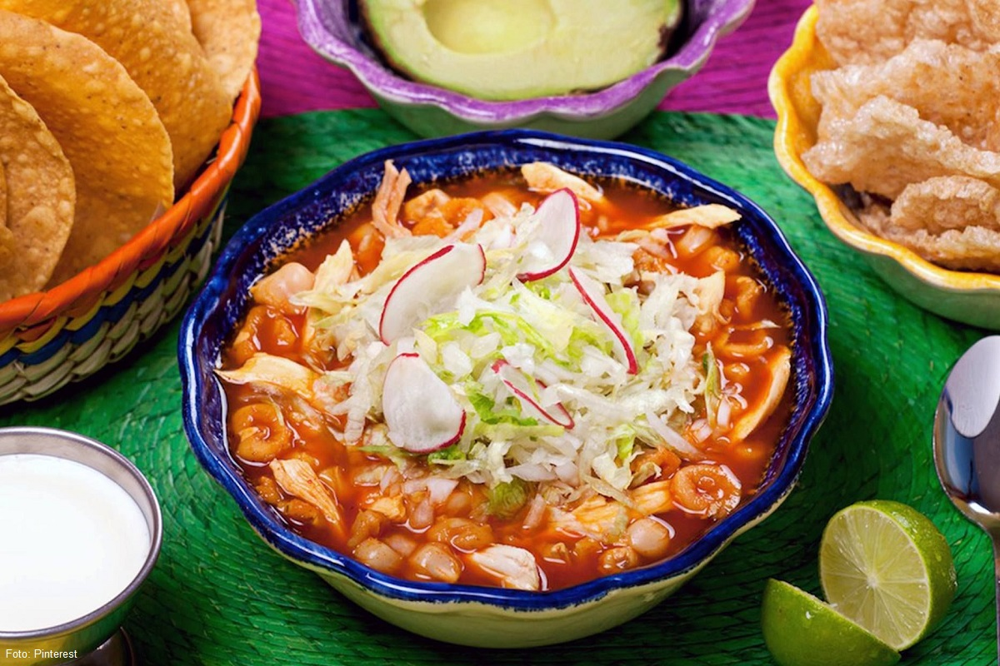
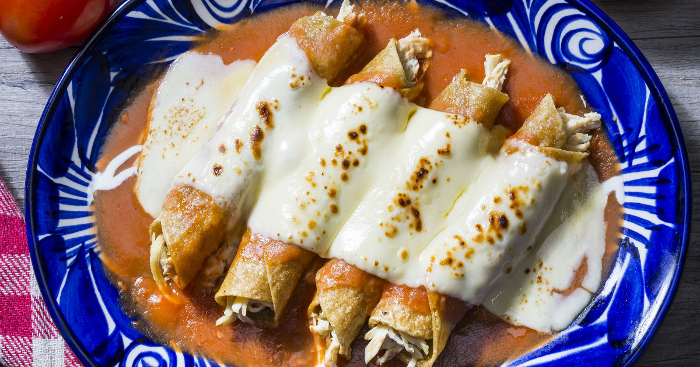

La gastronomía mexicana es el conjunto de platillos y técnicas culinarias de México que forman parte de las tradiciones y vida común de sus habitantes, enriquecida por las aportaciones de las distintas regiones del país, que deriva de la experiencia del México prehispánico con la cocina europea, entre otras.

Antojito que se prepara con una tortilla de maíz o de harina de trigo, rellena con algún alimento y doblada o enrollada. Se come solo o acompañado por alguna salsa. Es el antojito de mayor consumo en México.

La enchilada es un plato que en México se elabora con tortilla de maíz enrollada y bañada en alguna salsa picante utilizando chile en su preparación.1 Dependiendo del estilo, la enchilada puede ir acompañada o rellena de carnes —pollo, res, pavo— queso o verdura cocida; además de ser acompañada de alguna guarnición adicional, que generalmente consiste en cebolla fresca picada o en rodajas, lechuga, crema de leche y queso.
Para aprender mas sobre esta comida, dale click aquí. ó aquí tambien.